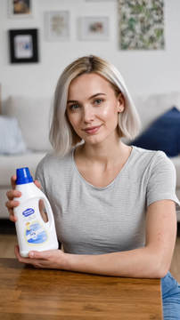
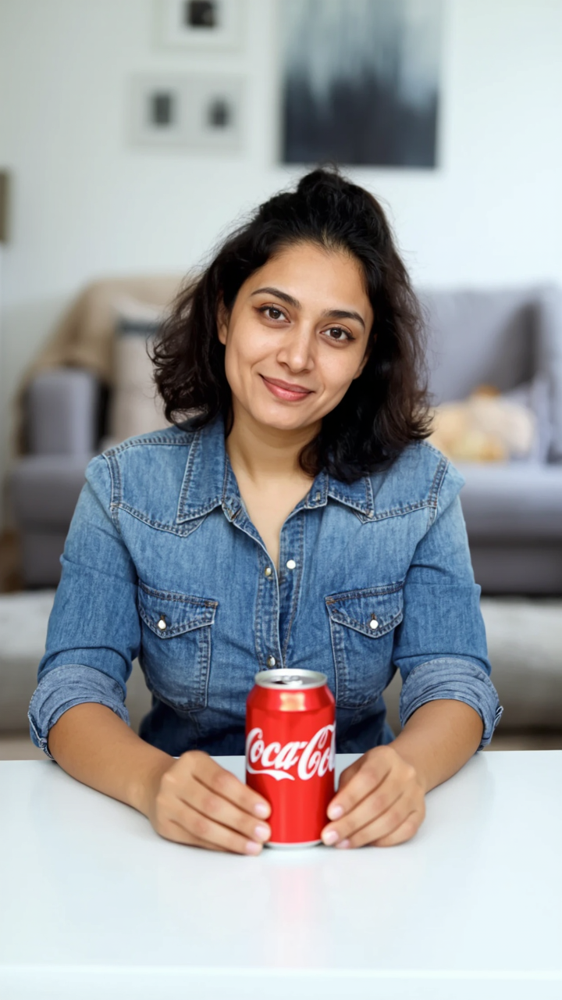
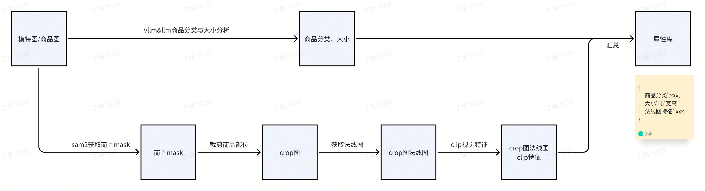
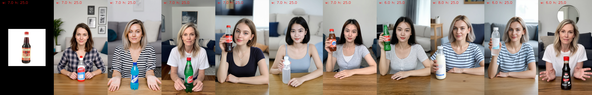
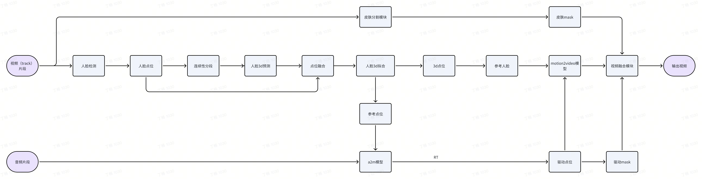

Human Avatar 视频生成
开源audio human avatar工作（如multitalk、omniavatar、hunyuan-avatar等），由于其通用属性，在口播场景下“音频-手势”同步方面表现不佳，尤其在说话时人物手势和头部微动作难以跟随语气音调产生自然明显的节奏变化。我们方案在“音频-手势同步性”这一关键维度上，相较于Multitalk、FantasyTalking及HunyuanAvatar等主流开源方案，展现出明显可感知的优势，生成的手势与语音内容在节奏和语义上具有更高的契合度。 除此之外，生成的视频具有真实自然的头部微动作和手势变化，展现出较高的真实度。
技术方案

形象生成




商品图融入
模版检索
检索流程：

效果展示：



商品插入
效果展示：


human avatar 视频生成
最新效果
无论是在坐姿还是站姿、商品手持或者非手持、以及单人说话（非电商）场景下，均能生成高保真、高同步的视频。
生成视频
生成视频
生成视频
生成视频
生成视频
生成视频
生成视频
生成视频
视频字幕擦除
技术方案
基于wan2.1的视频字幕擦除方案，介绍见ByteTech：https://bytetech.info/articles/7521726488270503962#O9WHd3mqro6hg8xP66wcV2KdnQe
- 视频ocr模块
- 字幕mask模块
- 视频inpainting模块
效果展示
视频改口型V2：两阶段方案，支持多人场景
视频改口型难点
- 画面中可能有多人，如何实现精准的音频与人脸配对
- 生成质量要求高
- 时序稳定性要求高
- 频繁遮挡与侧脸
- 整体流程复杂，耗时高
技术方案
模型设计
- 算法框架：两阶段的改口型框架，Audio2Motion + Motion2Video ，分别负责 口型动作生成 与 视频纹理生成 (GAN)
- audio2motion模型:
- 模型结构：audio encoder + motion encoder + deep cnn decoder，cross attention融合音频特征和参考motion特征，输入deep cnn预测最终motion；
- 3D点作为motion表示： 采用 deep3D 模型预测 + landmark-fitting 的方式，motion表示更精准；
- 更多的motion点： 使用下半脸240个3D点，支持更灵活的面部运动；
- 带参考motion的模型设计： 参考motion潜空间特征的均值方差作为参考运动风格输入motion decoder
- 类classifier-free guidance的训练 ：增加可学习的embedding作为general motion特征，与参考motion特征在训练时随机作为motion特征，推理时则使用参数插值两者， 实现口型风格在泛化与本人之间可调；
- motion2video模型: 基于多参考帧的GAN
- 模型结构：align module + translation module
- align module：根据target motion与source motion对多参考帧进行warp
- translation module：接收target motion与warpped特征，生成全脸图
- 新颖的面部遮罩 ：包含鬓角，有效减轻yaw大角度时轮廓融合问题
- 动态参考帧选择策略 ：
- 根据pose相似度选择 5帧动态参考帧
- 根据张嘴大小 + 牙齿质量排序选择 20帧静态参考帧
- 512分辨率训练推理 ：提升面部清晰度
- 生成质量评估：重建测试中SSIM 由 0.75 提升至 0.81，纹理保持主观评测中对 v1 有明显优势
音频多人匹配
- Active Speaker Detection 模块输入‘人脸区域视频’与‘音频’，输出此人脸说话的置信度。一个简单的方案是所有人脸track与对应音频逐一进行ASD模型判断， 根据阈值或最高置信度决定是否在说话 。 这样做存在两个问题：
- 阈值不好设置 ，阈值设高了拒绝样本太多，召回率低，准确率高（漏判）；阈值低了召回高，准确低（误判）
- 长视频无法结合声纹信息与人脸id信息 ，导致前后speaker_id不一致
- 我们设计的逻辑：
- 提升ASD模块精度： “多ASD模型 + 口部点位运动统计量”实现更高准确度的ASD模块
- 逻辑优化：保证准确的情况下提升召回 。步骤：
- ASD基础模块 高阈值保证配对成功语句的强置信
- 整个视频时间跨度下 人脸ID特征聚类 ，形成人脸ID库
- 整个视频时间跨度下 声纹特征聚类 ，形成声音ID库
- 使用 基于传播（propagate）的图算法提升召回率
- 效果：此策略使准确率高达95%同时召回由30%提升到了65%
数据收集
- 构建数据处理pipline
- 视频基础过滤，码率、分辨率、音频存在性
- 画质iqa过滤
- 同步性过滤：人脸检测 -> 人脸追踪 -> 口型同步分数过滤 -> 抠出人头区域
- b站10k长视频处理后得到约400h clip数据
- Avspeech、TalkingHead-1kh中部分视频，筛选处理后约200h clip数据
遮挡优化
- 短剧、电商场景经常会出现遮挡，我们利用sam2的分割能力设计出一套分割流程，可以鲁棒地分割出非遮挡区域。 具体步骤：
- 使用face-parsing分割出脖子区域，找到 脖子中心点位
- 使用sapiens预测 人手点位
- 使用florece预测 商品框
- 多维度打分排序策略 ：不合常识的商品框过滤、脖子框存在性检查、人手遮挡程度，商品框遮挡程度等规则，最终根据得分对帧排序
- 引导点 + 引导框提升sam2鲁棒性 ：得分最优的5帧作为sam2引导帧，正引导点为鼻子点、下巴点、脖子点，负引导点为手部点，引导框为人脸-脖子框
- 分段sam2推理 ：为保证长视频分割的连续性、降低显存使用，我们用分段推理，每段复用引导帧
- 这样得到了较高鲁棒性的人皮肤非遮挡区域，帮助motion2video的输出并回帖。
时序优化
- 通过优化算法流程中 各个环节的人脸点位、3D参数 提升时序稳定性
- 多尺度点位 ：
- coarse点：人脸检测框外扩x倍最大外接框mediapipe人脸点位，image mode
- fine点：coarse点的外接框外扩x倍medipipe人脸点位，image + video mode
- deep3d点：deep3d net预测投影得到2d点
- fit点：fine和deep3d插值后的点 3dmm fitting后的shape投影得到2d点
- 点位回滚：观察到精细点位虽然准，但会漏检，因此当精细点位漏检时使用粗点位代替
- 点位补全：对于满足条件的“空洞”帧，使用前后帧插值补全
- 多粒度连续性分段 ：按框、粗点位、细点位等规则按连续性划分视频帧split ，目的是使split段内点位是连续的，方便后续平滑处理
- 点位平滑：split内做卡尔曼滤波
- 3dmm fitting加入 时序平滑约束 ，使fitting出的参数时序更平滑
- deep3d投影点与mediapipe点插值优：化大角度时点位稳定性
侧脸优化
- mediapipe的点位与deep3dface的投影点位做线性插值
- 公式：alpha * mediapipe + (1 - alpha) * deep3d
- 30度以内 alpha = 1，30-45度线性减少到0，大于45度alpha=0。
耗时优化
- 多措施优化耗时，最终整体短剧类RTF由1:10降低至1:5
- 模型torch compile编译
- 遮挡模块由于大模型较多，我们用一个 单独进程异步处理segmap
- 实现多线程基类 （基于生产者消费者），支持同步、异步处理mediapipe点位、写视频、face_detect等操作
lipsync算法

效果展示
短视频 & 电商场景
原视频
翻译后
原视频
翻译后
原视频
翻译后
原视频
翻译后
短剧场景
原视频
翻译后
原视频
翻译后
原视频
翻译后
视频改口型V1：端到端方案
效果展示
懂车帝讲车
完整效果
素材效果
toB三生智能
原视频
翻译后
原视频
翻译后
Force大会-同声传译与数字分身
直播实时翻译
原视频
翻译后
大会开场5分钟领导的数字分身
即时零售
无需任何拍摄，利用商家已上传的图片和视频，自动生成商品讲解文案并剪辑为图文视频，配合已有数字人形象进行讲解
简易带货
原视频
翻译后